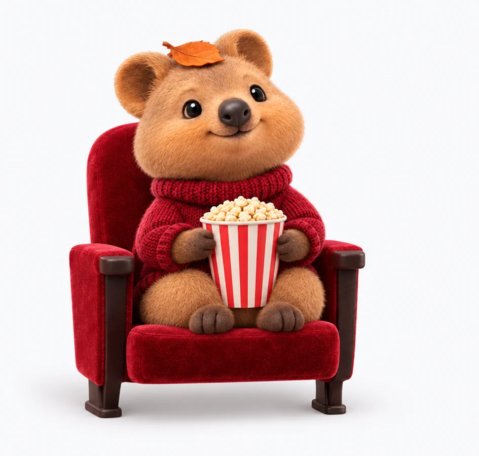

선생님을 위한 AI 원리 3분 극장
이거 왜 이래?
3분이면 풀려요.
AI를 쓰다가 "왜 매번 다르게 나오지?", "왜 앞 내용을 잊지?" 하는 순간들. 코드로 그린 1분 애니메이션으로 보고, 직접 만져 보고, 학생에게 할 한 문장까지 챙겨 가세요.

43%한국 중학교 교사의 업무 AI 활용률. OECD 평균은 36%.OECD TALIS 2024
76%AI를 쓰지 않는 교사가 꼽은 이유 1위 '지식·기술 부족'.OECD TALIS 2024
62.9%한국 초·중등 교사의 생성형 AI 활용률.한국교육과정평가원 2026
10,268명AI 선도교사 연수 신청(모집 10,963명).2026
오늘의 한 토막 · 학생에게 이렇게 말해요
…
시즌 1 · 2 · 3 · 4
에피소드 24편
트랙 AAI 영상을 만들다 생기는 "왜?"
트랙 B요즘 AI를 따라잡는 필수 개념
다음 시즌대본 초안만 있어요 · 준비 중
검색 결과가 없어요. 다른 말로 찾아보세요.
모아 보기
학생에게는 이렇게 말해요
스물네 편의 문장을 한자리에. 수업 시작 1분에 하나씩 써 보세요.
혼자 3분
출근길에 한 편. 자막이 항상 켜져 있어 소리 없이도 돼요.
연수 도입 5분
연수 모드로 틀면 큰 글씨 슬라이드가 돼요. ←→로 넘기고 N으로 강사 대본을 열어요.
영상 파일로
녹화 모드는 버튼을 숨기고 16:9로 자동 재생돼요. 화면 녹화로 영상 파일을 뜨세요.